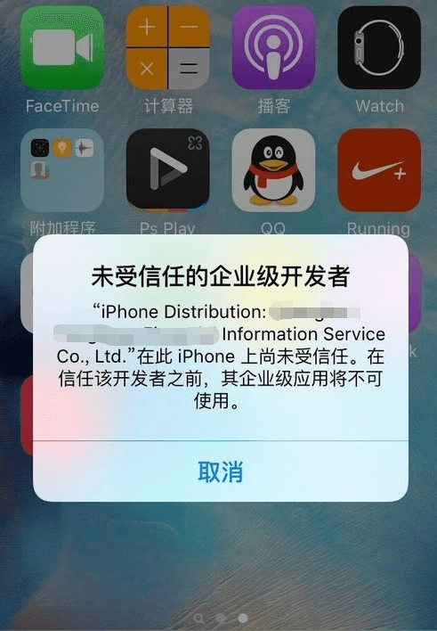
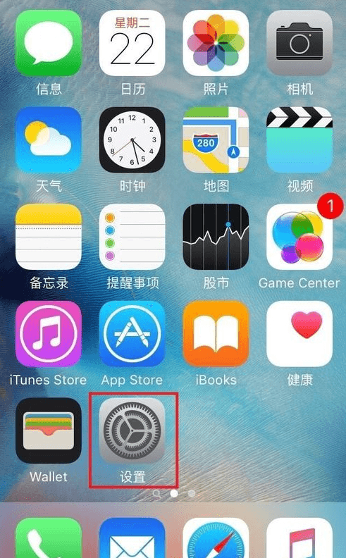
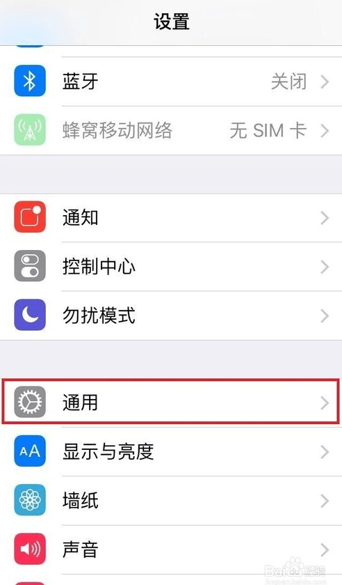
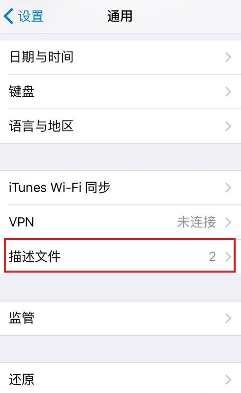
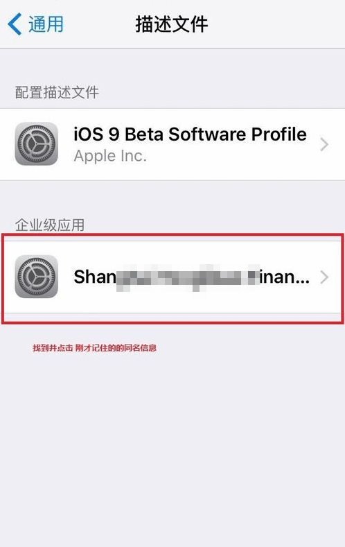

手机移动端包括针对苹果手机的IOS客户端，适用于安卓手机的android客户端，以及适用于所有智能手机、装有浏览器的手机web端，以上三者统称为手机移动端。
1）打开电脑浏览器，在网站右上角找到“下载中心”，点击“移动端”下载进入繁华客户端下载页面。选择您的手机系统（IOS或者安卓）对应的二维码图片，然后拿出手机， 通过扫码软件扫一扫对应图片上的二维码。（注：建议使用浏览器或手机自带的扫一扫进行扫描，使用微信的扫一扫有可能会无法打开。） 2）扫码后iphone手机即可出现下图的下载页面。点击下载图标，即可下载安装。 3）扫码后安卓系统的手机即可出现下图的安装页面，点击安装图标，即可下载安装。安装完成后，点击打开图标，即可打开安卓客户端软件。
IOS系统有时会遇到打不开APP，提示未受信任的企业级开发者的问题，解决方法如下： 1)点开App,弹出未受信任的开发者，记住弹框中冒号后面的大写字母。关闭，进入设置。

2)依次打开：设置 》通用 》

3)进入：描述文件

4)找到所对应的企业级应用（就是打开App,冒号后面的大写字母）

5)选择信任，进入

6)点击弹出的弹框中的“信任”。大功告成，可以愉快的进入App了！！！
繁华安卓手机端和繁华手机web 版支持平台所有的彩种. 繁华IOS手机端支持的彩种有以下几种：重庆时时彩、分分彩、山东11选5和福彩3D。
目前繁华安卓手机端、IOS手机端和繁华手机web版都支持所有的银联卡充值，充值限额为：500-1000元 目前繁华安卓手机端、IOS手机端和繁华手机web版均不支持微信充值。 目前繁华安卓手机端、IOS手机端和繁华手机web版都支持工行、建行、中行、农行、民生、招行、交行、光大、广发、浦发等十大银行提现，单笔提现最低金额为100元，单笔提现最高金额为5万元。